AI专家协作系统
面向日常使用场景。进入后可使用专家工作台、专家广场、技能中心和进化实验室。
专家工作台
专家广场
技能中心
进化实验室
本指南按照用户实际使用路径整理：使用手机号验证码登录；如果账号加入了多个组织， 需要选择本次进入的组织；进入组织后，系统会根据账号权限展示可用入口。
完成登录和组织选择后，系统会根据当前账号在该组织下的权限， 展示可进入的系统入口。
面向日常使用场景。进入后可使用专家工作台、专家广场、技能中心和进化实验室。
面向企业管理员。用于查看企业内 AI 专家并维护组织成员。 可从用户工作台左下角用户菜单进入。
面向平台运营人员。用于管理企业账号、处理 AI 专家上架申请， 并维护平台专家广场展示。
进入 AI专家协作系统后，默认从专家工作台开始使用。页面默认选中 MA，适合处理综合类任务； 如需特定领域能力，可通过左上角当前专家区域切换到其他 AI 专家。
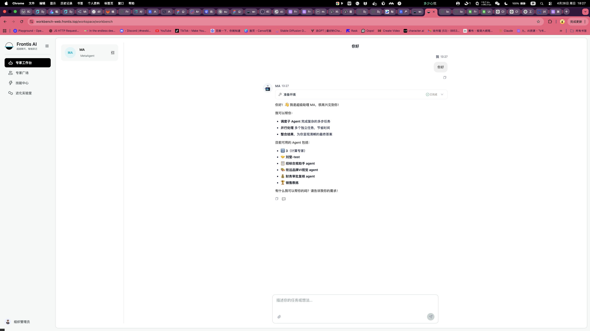
MA 是专家工作台的默认入口，适合需求拆解、信息整理、任务规划、派发任务和综合答复。
点击左上角当前专家区域，可查看已添加到工作台的 AI 专家。选择专家后，当前对话会切换到对应专家。
AI 专家生成的文档、方案、表格等内容，会集中展示在右侧成果列表中，便于后续查看和继续处理。
MA 可以把任务派发给其他 Task Agent 执行，再把执行状态和结果汇总回来。 需要注意的是：被 MA 调度的 Task Agent 必须已经添加到当前工作台；如果没有添加， 需要先到专家广场添加，或由管理员确认该专家对当前组织可见。
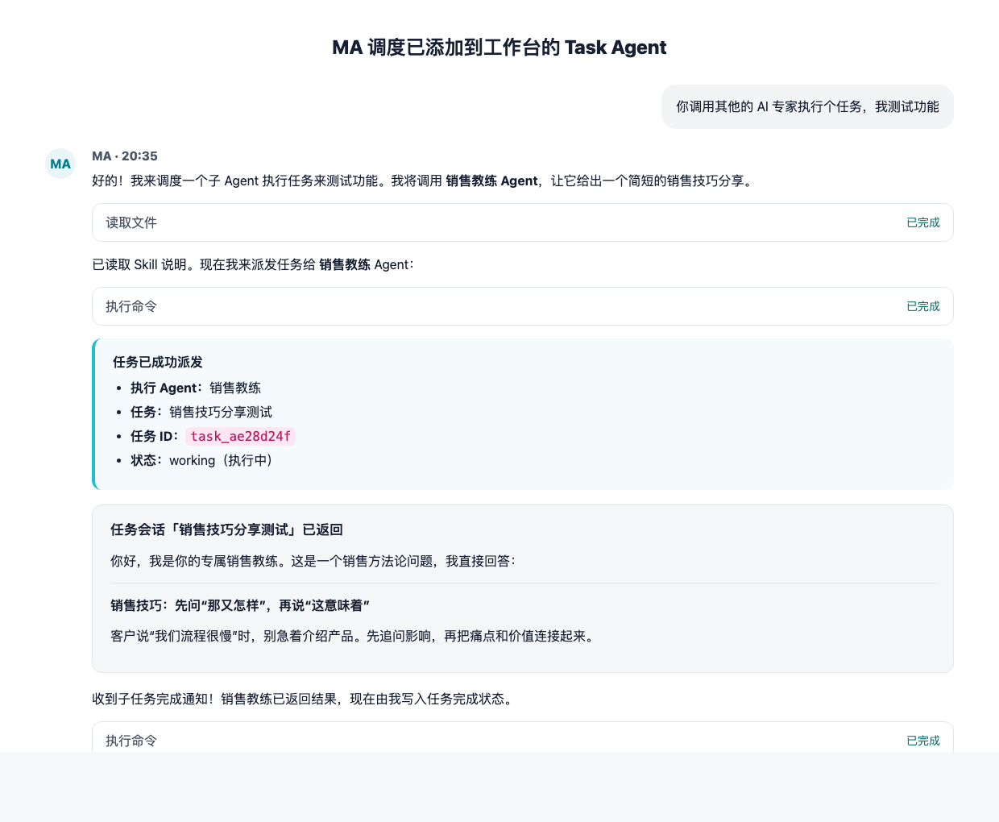
MA 调度的对象来自当前工作台已添加的 AI 专家。需要使用某个专家前，先在专家广场添加到工作台。
用户可以直接告诉 MA 要调度哪个专家做什么。MA 会发起任务、跟踪状态，并在结果返回后汇总给用户。
如果不想通过 MA 派发，而是要直接和某个 AI 专家对话，可点击左上角当前专家区域切换到该专家。
| 使用场景 | 适合方式 | 示例说法 |
|---|---|---|
| 多步骤任务，需要 MA 统筹 | 让 MA 调度 Task Agent | “请调用销售教练，帮我生成一段客户异议处理话术，并把结果汇总给我。” |
| 招聘、销售、招标等明确专项任务 | 直接切换到对应专家 | 点击左上角当前专家区域，切换到招聘助手、销售教练或招标合规助手后直接提问。 |
| 需要多个专家分别给建议 | 先由 MA 拆解，再派发 | “请让销售教练给话术建议，再让财务分析助手看一下报价风险。” |
| 持续围绕一个专业主题深入追问 | 切换到该 AI 专家单独交互 | 例如持续和销售教练打磨拜访话术，或持续和客服专家优化回复模板。 |
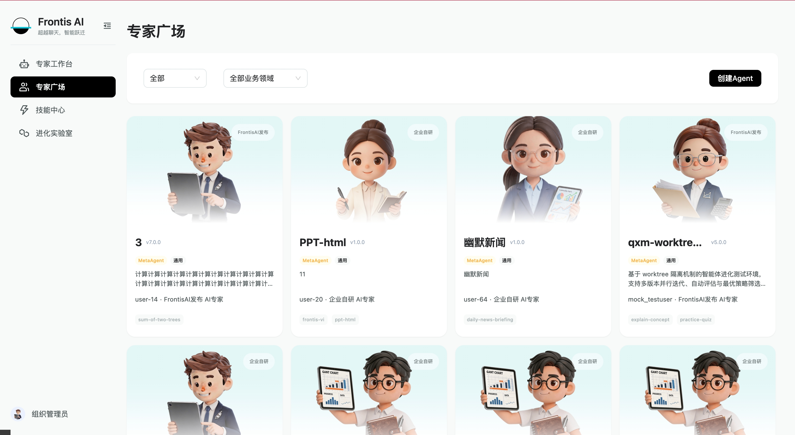
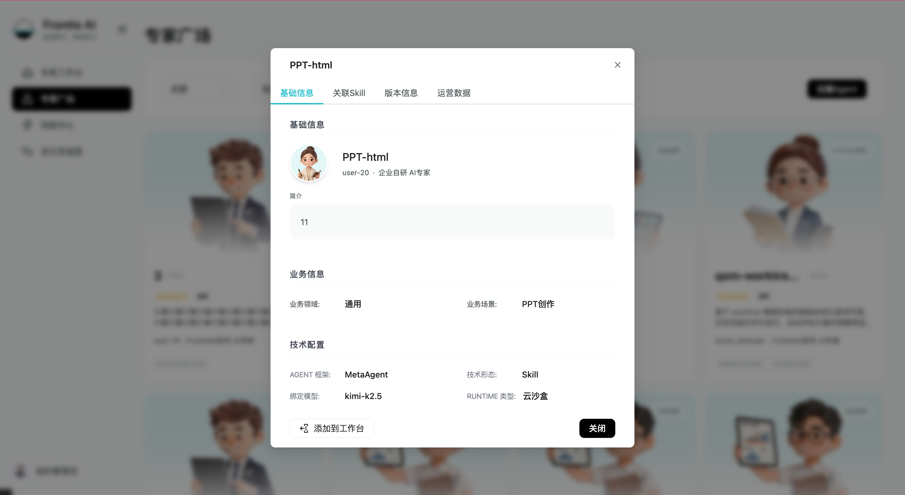
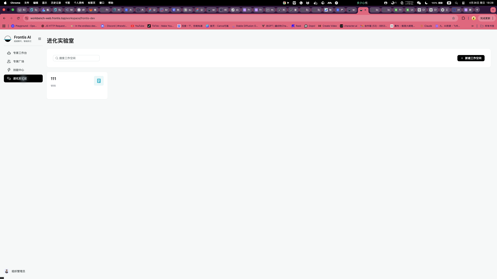
以下内容按照《Agent 工作空间产品功能说明》整理。进化实验室用于调研、构建、测试、 发布和进化单个 Agent，每个 Workspace 对应一个 Agent 的全生命周期管理空间。
进化实验室 - Agent Workspace 是 FrontisOS 中用户调研、构建、测试、发布和进化单个 Agent 的持久化工作环境，致力成为企业选、用、育、留 AI 员工的一站式平台。
核心理念是：每个 Workspace = 一个 Agent 的全生命周期管理空间。它以“对话”为主要交互方式， 以“Agent 产物”为核心关注对象，并在此基础上加入 RL 驱动进化和企业级发布上架能力。
Agent 工作空间是专家的 Agent 构建入口页。每张卡片代表一个独立的 Agent 工作空间，承载一个 Agent 的完整研发资产，包括 Skill、工具箱、知识库、对话历史和版本等。从这里选择进入某个 工作空间，即可开启该 Agent 的研发、测试、评测、发布等全流程工作。
| 信息 | 说明 |
|---|---|
| 图标 + 首字标识 | 按业务分类配色，如客、供、析、招、销、创。 |
| 名称 | 例如智能客服、供应链协同。 |
| 描述 | 展示该 Agent 的核心定位与覆盖能力，内容过长时省略。 |
| 操作 | 支持重命名，修改名称和描述；支持删除，删除后当前工作空间不可见。 |
| 整卡点击 | 进入该 Agent 的三联工作台：左侧任务流、中间对话区、右侧研发 / 评测 / 发布面板。 |
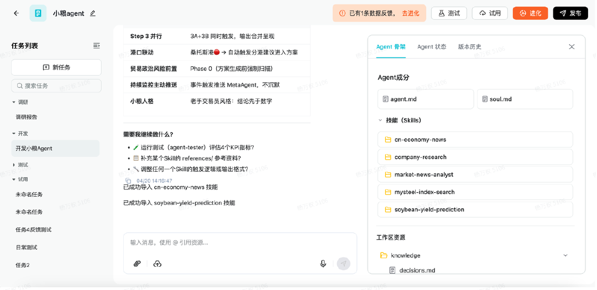
| 区域 | 核心职责 | 备注 |
|---|---|---|
| 左栏 · 任务侧边栏 | 管理所有任务，切换上下文。 | 按照调研、开发、测试、使用流程进行排布和分级分类管理。 |
| 中栏 · 对话画布 | 以对话驱动所有构建与测试操作。 | LUI 对话形式和 MetaAgent 对话。 |
| 右侧 Agent 面板 | Agent 结构树、状态指标、修改历史。 | Agent 骨架支持编辑；Agent 状态展示核心效果指标；版本历史记录工作空间文件历史和发版情况。 |
| 区域 | 元素 | 说明 |
|---|---|---|
| 左区 | Agent 头像 + 名称 | 点击可编辑 Agent 名称，名称最长 32 字符。 |
| 左区 | 版本号徽章，如 v2.1 | 下拉可切换历史版本快照，只读预览。 |
| 右区 | 进化按钮 | 当有进化历史记录或者触发过进化行为时展示可点击状态，初始状态下置灰。 |
| 右区 | 试用按钮 | 随时可用，进入 Try 模式，右栏收起。 |
| 右区 | 发布按钮 + 橙色徽章 | 橙色圆形徽章显示“未发布编辑数”，无未发布变更时徽章隐藏。 |
当有新的回流数据或检测到 Skill 失败时，页面会出现通知条。通知内容显示“新反馈数据”和 “Skill 失败”数量，点击“查看”会跳转到 Status 面板，进入进化中心查看进化历史记录和评测文档。
每个 Task 是一个独立对话上下文，服务于单一目的。任务之间可并行运行，切换任务不会打断 其他正在执行的任务。
| 任务类型 | 说明 | 典型操作 |
|---|---|---|
| 调研 Research | 导入文档、分析需求、生成 PRD、沉淀行业知识。 | 用户上传文档，Agent 分析总结。调研是可选步骤。 |
| 开发 Build | 构建 Skill、配置 Soul、编辑 agent.md。 | 用户描述意图，Agent 生成并修改文件。 |
| 测试 Test | 模拟测试 Agent 功能和效果。 | 系统运行测试脚本，返回指标结果。 |
| 试用 Try | 以最终用户身份与 Agent 对话。 | 用户扮演客户，验证体验。 |
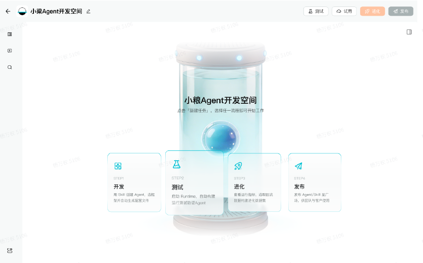
核心原则是 Language UI，所有构建和测试操作均通过对话完成。
| 消息类型 | 说明 |
|---|---|
| 用户消息 | 描述意图、上传文件、发出指令。 |
| Agent 消息 | 执行结果 + Artifact Tag，标注修改了哪些文件。 |
| 系统消息 | 测试启动、进化触发等系统事件。 |
每当 Agent 修改了右侧面板中的产物，会在消息底部以等宽徽章标注修改内容。
-> skills/leadeep-search/fetch_transcript.py created -> soul.md updated -> agent.md secrets section updated
对话过程中产生的中间文件，如分析结果、临时文档等，会以轻量浮动图标展示，点击后展开为附件列表。 这些附件与右侧 Agent 结构面板相互隔离，避免和正式 Agent 产物混淆。
Skill 生成耗时较长时，对话中会显示进行中状态。用户可以切换到其他任务，不会打断当前生成过程。 右侧 Composition 树中，正在生成的 Skill 旁会显示活跃指示器。
右侧面板是 Agent 的全局视图，包含 Composition、Status 和 History 三个 Tab。
Composition 展示 Agent 的完整文件结构，分为两个区域。
Zone 1 — Agent Package（随发布上架）
agent.md 身份与能力定义，支持编辑
soul.md 人格、语气、行为约束，支持编辑
skills/
leadeep-search/
SKILL.md
fetch_transcript.py
extract_actions.py
decision-tree/
SKILL.md
analyze.py
meeting-summary/
SKILL.md
summarize.py
Zone 2 — Workspace Resources（仅开发时参考，不随发布打包） knowledge/ industry-analysis.md 行业分析 product-prd.md PRD 文档 domain-glossary.md 领域术语表 meeting-transcripts/ 会议纪要 competitor-research/ 竞品调研
Zone 1 标注 published 徽章，Zone 2 标注 dev only 徽章。Knowledge 是开发者的准备材料， 不随发布打包。点击任意文件可在右侧打开预览和编辑，保存后同步生效。
| 指标 | 类型 | 说明 |
|---|---|---|
| 任务完成率 | 百分比 + 环比增减 | Agent 完成用户任务的比例。 |
| Skill 触发准确率 | 百分比 + 环比增减 | 正确选择并执行 Skill 的比例。 |
| 执行耗时 | 绝对值，秒 | 平均任务执行时间。 |
| Token 消耗 | 绝对值 | 平均每次任务的 Token 开销。 |
History 是线性修改日志。核心规则是：只有发布才产生版本号。日常每次文件修改，包括开发、进化、 手动编辑，都是修改日志中的一个条目，没有版本号。只有点击发布时，才创建带版本号的快照，如 v1、v2、v3。
| 条目类型 | 说明 | 视觉 |
|---|---|---|
| edit | 文件修改。 | 文件类型图标 + 文件名 + 变更摘要。 |
| evolve | 进化触发。 | 粉色进化图标 + 事件描述。 |
| test | 测试执行修改。 | 橙色测试图标 + 结果摘要。 |
| publish | 发布上架。 | 绿色高亮 + 版本号 vN + sessions 数。 |
每个条目展示变更摘要、操作者和时间戳。
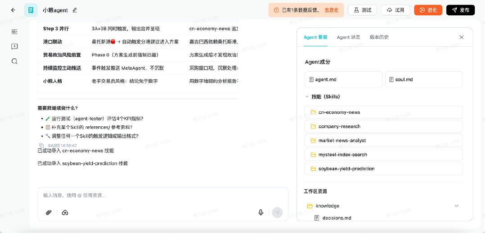
| 场景 | 行为 |
|---|---|
| 无历史消息 | 进入静态进化中心，查看历史进化记录。 |
| 有待执行的进化任务推送 | 执行待进化任务。 |
| 数据集过少 / 距上次进化不超过 1 周 | 按钮置灰，不可点击。时间和数据量可后台配置。 |
| 用户关闭右上角推送通知 | 进化按钮上显示可进化次数。 |
| 操作 | 说明 |
|---|---|
| 批准 | 用户阅读完报告、接受进化内容，系统更新 Agent 文件。 |
| 驳回 | 不进行操作，但在左侧列表保留记录。 |
进化完成后生成评测报告。报告结构面向用户视角，覆盖总结、进化细节、指标对比和 Skill 能力提升等内容。 仅进化产生的版本展示评测报告，普通开发版本不展示。
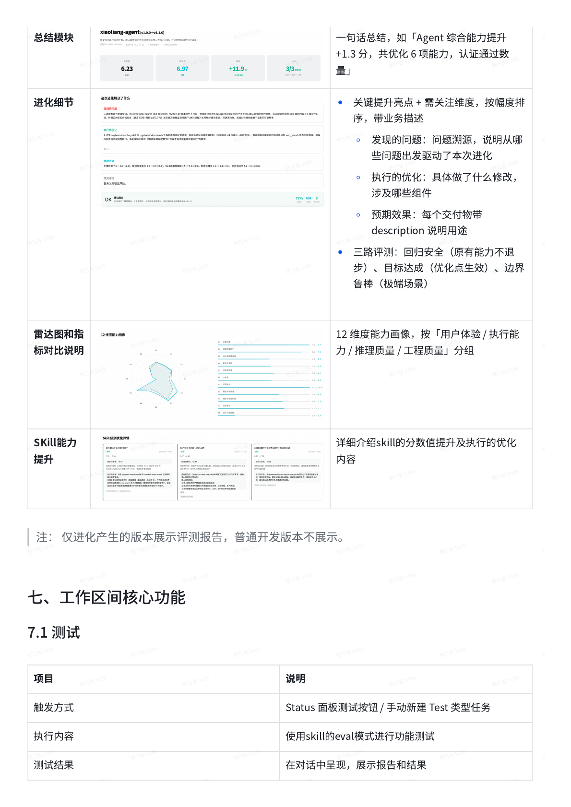
| 模块 | 内容 |
|---|---|
| 总结模块 | 一句话总结，如 Agent 综合能力提升、优化能力数量、认证通过数量。 |
| 进化细节 | 关键提升亮点、需关注维度、发现的问题、执行的优化和预期效果。 |
| 三路评测 | 回归安全、目标达成、边界鲁棒。 |
| 雷达图和指标对比说明 | 12 维度能力画像，按用户体验、执行能力、推理质量、工程质量分组。 |
| Skill 能力提升 | 展示 Skill 分数值提升及执行的优化内容。 |
| 触发方式 | Status 面板测试按钮 / 手动新建 Test 类型任务。 |
| 执行内容 | 使用 Skill 的 eval 模式进行功能测试。 |
| 测试结果 | 在对话中呈现，展示报告和结果。 |
| 测试次数 | 可无限次测试，每次为独立任务。 |
试用用于模拟用户进行使用，回流数据可用于进化，支持在对话信息中进行打分和反馈。 试用后体验达到标准可进行发布。
| 触发方式 | 新建 Try 类型任务 / Status 面板试用按钮。 |
| 默认版本 | 最新状态，本期不支持选择历史版本。 |
| 界面变化 | 右侧 Agent 面板自动收起，用户可手动展开；中栏进入纯对话模式。 |
| 开场提示 | “欢迎使用 [Agent名称]，请与我开始对话吧”，该提示是引导语，非 Agent 发言。 |
| 试用产出 | 对话中生成的文件以轻量附件展示，不进入 Composition 结构树。 |
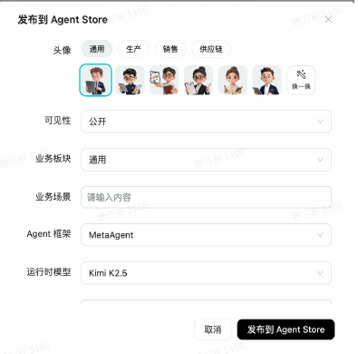
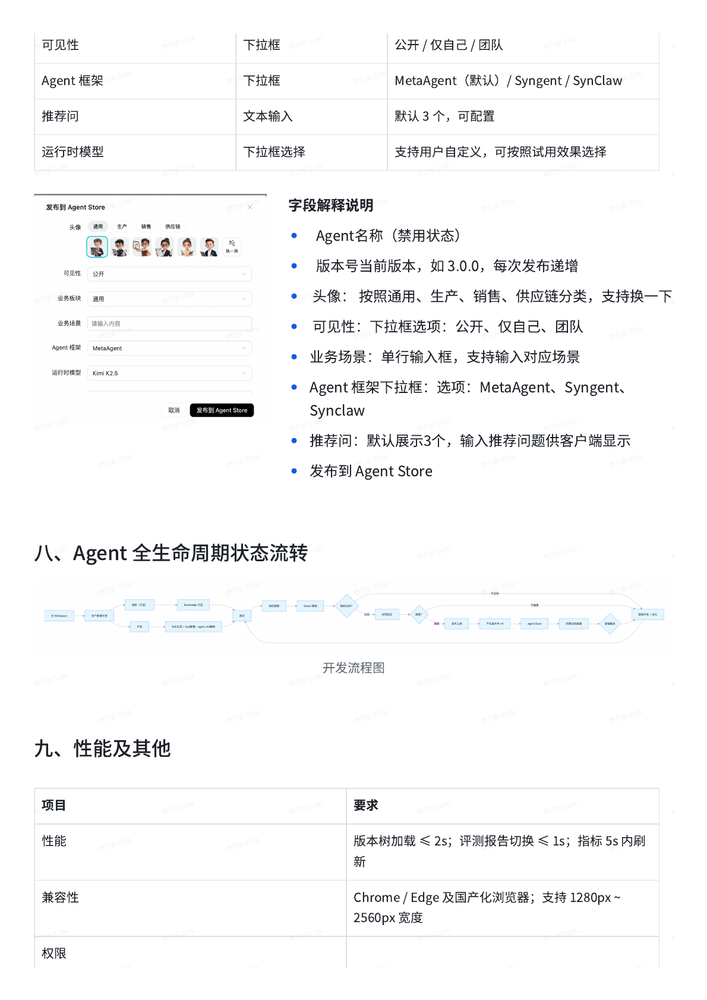
| 触发入口 | Header 发布按钮 / History 面板底部按钮。 |
| 执行方式 | 弹窗确认，非对话，包含头像选择和基本信息填写。 |
| 发布内容 | Agent Package，包括 agent.md、soul.md、skills，不含 Knowledge。 |
| 发布去向 | 资源包推送到 Agent Store，等待审核。 |
| 版本快照 | 发布成功后在 History 中创建带版本号的 publish 条目。 |
| 字段 | 类型 | 说明 |
|---|---|---|
| 版本号 | 只读输入框 | 自动生成，如 1.0.0；每次发布递增。 |
| 头像 | 选择按钮组 | 按通用、生产、销售、供应链等分类选择，支持换一下。 |
| 可见性 | 下拉框 | 公开 / 仅自己 / 团队。 |
| 业务场景 | 单行输入框 | 输入 Agent 对应的业务场景。 |
| Agent 框架 | 下拉框 | MetaAgent（默认）/ Syngent / SynClaw。 |
| 推荐问 | 文本输入 | 默认 3 个，可配置，供客户端显示。 |
| 运行时模型 | 下拉框选择 | 支持用户自定义，可按照试用效果选择。 |
| 发布到 Agent Store | 提交按钮 | 确认信息后提交发布。 |
Agent 的生命周期从空 Workspace 开始，经过调研、开发、测试、试用、发布、上架、使用反馈和进化， 形成持续更新的闭环。
| 项目 | 要求 |
|---|---|
| 性能 | 版本树加载 ≤ 2s；评测报告切换 ≤ 1s；指标 5s 内刷新。 |
| 兼容性 | Chrome / Edge 及国产化浏览器；支持 1280px ~ 2560px 宽度。 |
| 权限 | 仅 Agent 创建者及被授权的运营者可进入进化及效能中心。 |
| 数据安全 | 用户对话数据回流前须经过脱敏处理。 |
| 易用性 | 一键操作，无专业门槛。 |
| 可扩展性 | 支持新增指标接入。 |
提示：发布和上架是两个动作。发布用于企业内部使用；如需展示到平台专家广场， 需要提交上架申请并等待平台运营审核。
进入当前组织后，具备企业管理员权限的用户可进入企业管理台。企业管理台用于查看本企业可用的 AI 专家，并维护企业成员和成员权限。入口位于用户工作台左下角用户菜单。
在用户工作台左下角点击用户头像，选择“企业管理后台”，进入企业管理台。
在 AI专家管理中查看企业内 AI 专家的版本、来源、发布方式和当前可用状态。
在组织管理中添加成员，并根据职责选择“普通成员”或“企业管理员”。

| 菜单 | 功能 | 建议操作 |
|---|---|---|
| AI专家管理 | 查看企业内 AI 专家的名称、版本、来源、业务领域、技术形态和可用状态。 | 确认员工需要使用的 AI 专家已经出现在列表中；如需查看某个专家详情，可进入详情弹窗查看基础信息、关联 Skill、版本信息和运营数据。 |
| 组织管理 | 维护企业成员和成员角色。 | 添加成员时填写成员信息，并选择角色。当前支持“普通成员”和“企业管理员”。 |
AI专家管理用于查看本企业当前可用的 AI 专家。企业管理员可以在这里确认专家是否已经进入企业可用范围， 以及专家的版本、来源和基础配置是否符合当前业务使用需要。
| 查看内容 | 说明 |
|---|---|
| 专家基础信息 | 包括名称、头像、简介、业务领域、业务场景、来源和版本。 |
| 关联能力 | 查看该 AI 专家关联的 Skill、版本信息和运营数据，判断是否适合当前团队使用。 |
| 可用状态 | 确认专家是否已经对企业内成员开放，避免员工在工作台中找不到需要使用的 AI 专家。 |
组织管理用于维护企业成员。企业管理员可将员工加入当前企业，并根据员工在企业中的职责分配角色。 成员加入后，才能在该企业组织下使用对应的系统入口和 AI 专家能力。
| 角色 | 适用对象 | 主要权限 |
|---|---|---|
| 普通成员 | 日常使用 AI 专家的企业员工。 | 进入用户工作台，使用企业已开放的 AI 专家和相关功能。 |
| 企业管理员 | 负责企业内成员和 AI 专家可用性维护的管理员。 | 除日常使用外，可进入企业管理台，维护组织成员并查看企业内 AI 专家。 |
建议：只给需要维护企业成员或企业内 AI 专家的人员设置“企业管理员”。普通业务使用者保持“普通成员”即可。
具备平台运营权限的用户可进入运营管理系统，用于管理企业账号、处理 AI 专家上架申请， 并维护平台专家广场的展示内容。
创建企业账号、设置企业管理员，并维护企业启用状态。
查看并处理 AI 专家上架申请。
维护已通过审核的专家，设置分类、展示范围和上下架状态。


提示：审批通过后，还要到 AI专家广场管理里设置分类、展示范围和上架状态。 设置完成后，用户才会在专家广场里看到它。
以下说明用于区分几个常见操作，便于在使用和管理时保持一致。
| 事项 | 说明 | 适用角色 |
|---|---|---|
| 发布和上架 | 发布用于企业内部使用；上架用于进入平台专家广场展示。 | 员工、企业管理员、平台运营 |
| 企业公开 | 企业公开仅表示在当前企业内部公开，不会自动进入平台专家广场。 | 员工、企业管理员 |
| 能不能申请上架 | 企业开通 AI 专家开发服务后，开发者可提交上架申请。 | 平台运营、员工 |
| 谁能在广场看到专家 | 由平台运营在 AI专家广场管理中设置，可面向全平台或指定企业展示。 | 平台运营 |
| 购买和支付 | 当前使用流程不包含购买、订单和支付操作。 | 全部角色 |
建议先按登录旅程完成前置检查，再按角色检查进入系统后的主要功能。